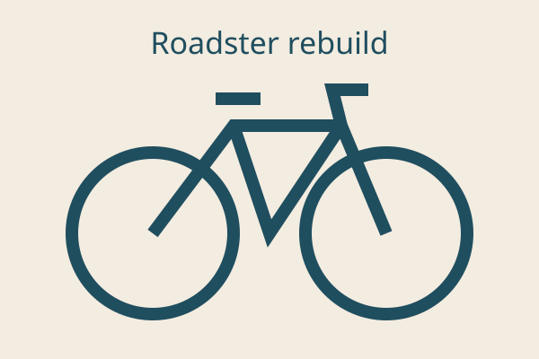
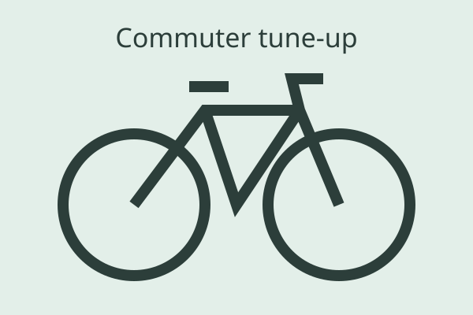
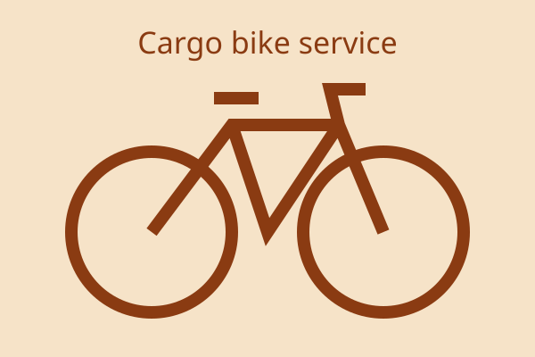
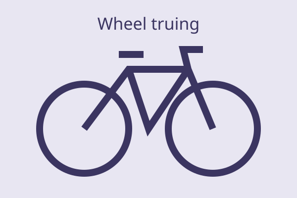

About the workshop
Quillfern Cycle Works is two benches, one truing stand and a long wall of parts drawers. We fix the bikes people ride every day.
How a repair goes
- You bring the bike in, or book a slot on the contact page.
- We look it over with you and write down a price before any work starts.
- We do the work, test ride it, and text you when it is ready.
- You collect it and we show you what we changed.
What we believe
Fix before replace
A worn part gets replaced. A part that can be cleaned, adjusted or trued gets that instead.
What we will always tell you
- What is worn, and how long it has left.
- What is safe to leave for now.
- What it costs, before we start.
Every bike leaves road-tested
No bike goes back to its rider until one of us has ridden it round the block.
A bike that is looked after lasts for decades. Most of the work is small and regular.
The workshop's house rule
From the bench




A short film we like
Big Buck Bunny, an open film from the Blender Foundation (CC BY 3.0). It has nothing to do with bikes, but it is free to share.